Quick Start
This document aims to guide users in quickly configuring RTL87x2G development environment, including compiling SDK, downloading firmware, upgrading firmware, and capturing logs. Users can download the prebuilt files from the SDK to ensure the EVB is functioning properly and is compatible with the development environment while having the required functionalities.
Overview
The RTL87x2G SDK supports both Windows and Linux systems. Users can compile projects in the SDK using Keil/GCC, download files into the EVB using MP Tool. After the downloading process is complete, users can use Debug Analyzer to capture logs from the SoC. For details on the hardware wiring and corresponding PC software architecture, please refer to EVB Working Diagram.
{kind=link}
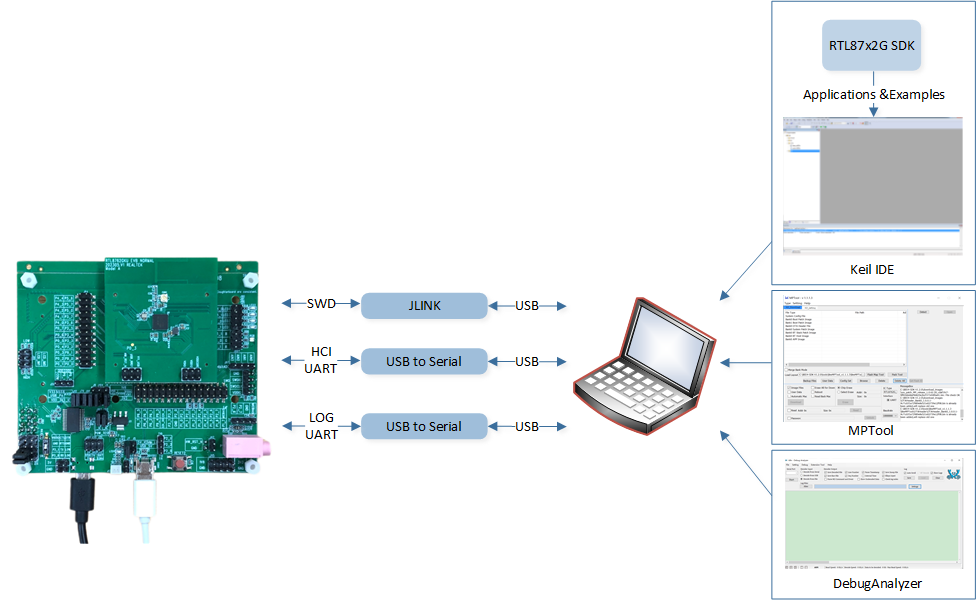
EVB Working Diagram
Required EVB
The EVB provides users with a hardware environment for development and application debugging. It consists of a motherboard and a daughterboard. Additionally, users need to prepare two USB data cables to connect the EVB and the PC. Please refer to the EVB interface distribution diagram for peripheral interface wiring information. For more information, please refer to Evaluation Board Guide.
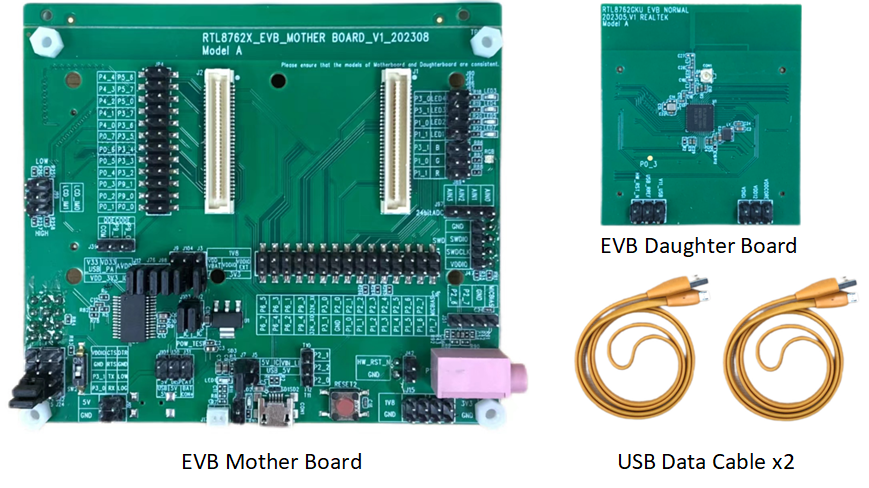
Hardware Environment
Required Files
The regular operation of the EVB requires downloading multiple files, including both basic files and application files.
Base Files: Including the necessary firmware and configuration settings for RTL87x2G.
Application Files: Including the specific code and functionality implementation for the target project.
The following are the default downloading files required for the normal operation of RTL87x2G.
Among them, Bank0 APP Config File is an optional downloading file.
For a description of the files, please refer to Compilation and Download section.
Files |
Provided by Realtek |
File Type |
File Download Option |
|---|---|---|---|
System Config File |
X (Generated by MP Tool) |
Base File |
√ |
Bank0 Boot Patch Image |
√ |
Base File |
√ |
Bank1 Boot Patch Image |
√ |
Base File |
√ |
Bank0 OTA Header File |
X (Generated by MP Tool) |
Base File |
√ |
Bank0 System Patch Image |
√ |
Base File |
√ |
Bank0 BT Stack Patch Image |
√ |
Base File |
√ |
Bank0 BT Host Image |
√ |
Base File |
√ |
Bank0 APP Image |
X (Generated by Project compilation) |
Application File |
√ |
Bank0 APP Config File |
X (Generated by MP Tool) |
Base File |
Optional |
Tools
During the development based on RTL87x2G SDK, users need to utilize Realtek's Development Toolkit and ARM/GCC Development Suite.
Tools |
URL |
Tool Version |
OS |
|---|---|---|---|
ARM KeilMDK |
uVision: V5.36 ARMCC: V6.17 |
Win10 |
|
GNU Toolchain |
13.2.Rel1(or later) |
Windows/Linux |
|
MinGW |
V3.82.90(or later) |
Windows |
|
MP Tool |
|
Win10 |
|
MPCLI Tool |
|
Windows/Linux/MAC OS |
|
MP Pack Tool |
|
Win10 |
|
PACKCLI Tool |
|
Windows/Linux/MAC OS |
|
Debug Analyzer |
|
Win10 |
Note
The installation packages under the path are all in
.zipformat, and users need to extract them manually.The MPCLI Tool is the cross-platform version of the MP Tool, and PACKCLI is the cross-platform version of the MP Pack Tool. If users are not developing on a Windows system, can use the cross-platform versions of these tools.
ARM Keil MDK
Users can compile all the applications projects in the SDK using the Keil Microcontroller Development Kit (MDK). For more information, please refer to Keil MDK section.
GNU Toolchain
Users can compile applications in the SDK using the GNU Toolchain. Before development, please install gcc-arm-none-eabi. For more information, please refer to GCC section.
MinGW
Users can use MinGW to parse the Makefile .
MP Tool/MPCLI Tool
Users can download files using MP Tool/MPCLI Tool, with MPCLI Tool being the cross-platform version of MP Tool. MP Tool has two downloading modes: MP mode and Debug mode. MP mode is suitable for mass production. This document primarily focuses on the Debug mode, which is intended for users in the early stages of software development. For more information, please refer to MP Tool.
MP Pack Tool/PACKCLI Tool
Users can package files using MP Pack Tool, which is suitable for OTA (Over The Air) updates and production downloading. PACKCLI Tool is the cross-platform version of the MP PACK Tool For more information, please refer to MP Pack Tool.
Debug Analyzer
Users can perform log verification using Debug Analyzer. For more information, please refer to Debug Analyzer Tool .
Bring Up EVB
To ensure that the EVB can be used normally, users can perform a downloading test follow the steps below:
Prepare an EVB and ensure the EVB interface is wired correctly. Set the EVB into Download Mode and then supply power to the EVB.
Double-click to run MPTool.exe, for specific operation steps and file paths refer to MP Tool Download.
Click .. at the Load Layout to load the
flash_map.inifile.Click Browse to load all the downloading files.
Click Detect to identify the COM port of the EVB.
Click Open to open the COM port.
Check Erase All for Download, click Download to start the downloading process. The progress bar shows the current downloading progress.
The progress bar shows OK when the files are successfully downloaded.
After the files are downloaded completely, set the EVB into Normal Mode.
Observe the behavior of the EVB, it can be verified through the Mobile App, or check whether the SoC Logs meet the expectations.

MP Tool Downloading Interface
Note
Please store the SDK, tools, and other related materials in a path that does not contain any spaces or chinese characters.
If Erase All for Download is checked, the flash memory will be completely erased before writing. If this option is not checked, only the area of files that are being downloaded will be erased from the flash.
Hardware Development Environment
The EVB provides a hardware environment for user development and application debugging. It consists of a motherboard and a daughterboard. The EVB has Download Mode and Normal Mode, and users need to use different wiring methods to set the required mode.
EVB Interfaces and Modules
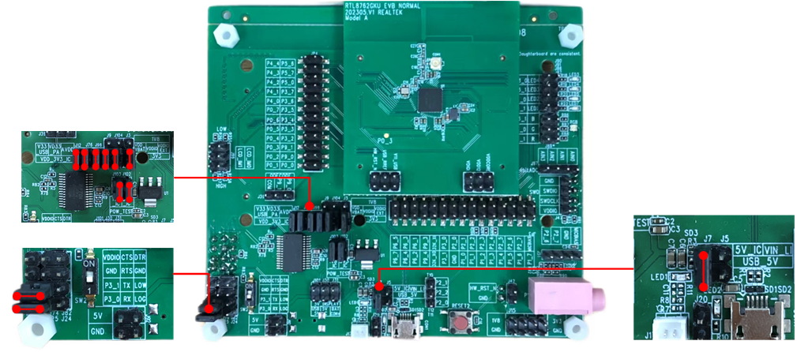
EVB Interface Distribution
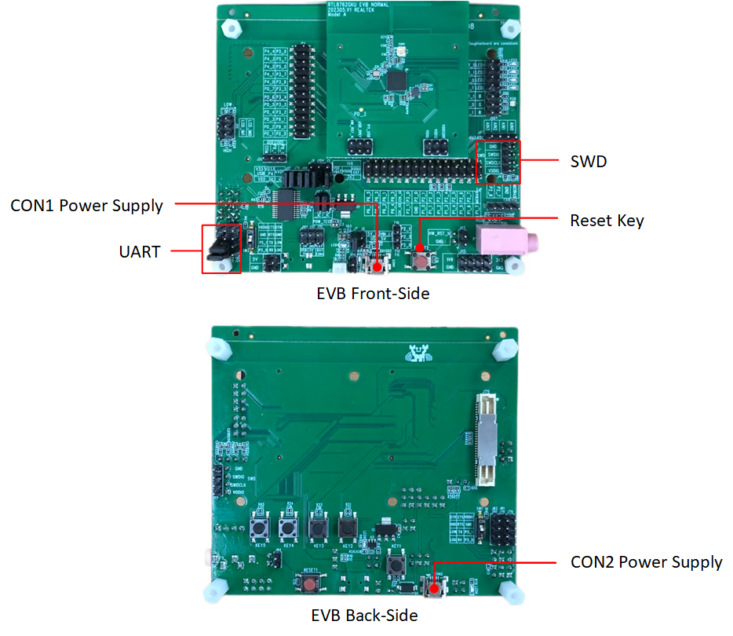
EVB Modules Distribution
Power Supply
The USB ports of the CON1 and CON2 need to be connected to a computer to power the EVB.
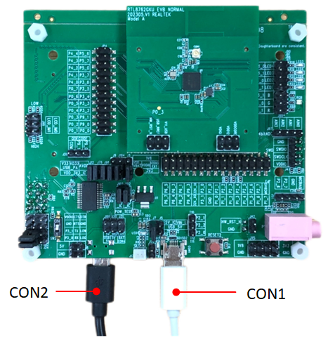
EVB Power Supply
SWD Wiring
RTL87x2G |
SWD |
|---|---|
GND |
GND |
SWDIO |
SWIO |
SWDCLK |
SWCK |
VDDIO |
Vterf/3.3V |

SWD Wiring
UART

UART Interface
Reset
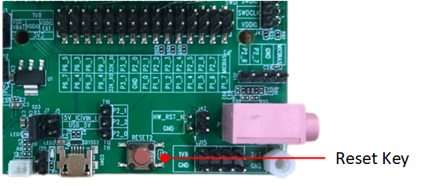
Reset Key
LOG Pin Wiring
On both the front and back side of the EVB, there is a DIP switch. Set both switches to the '1' position. Use a jumper cap to connect the RX and LOG Pin. Once the connection is complete, check the Log output by referring to Log Verification.
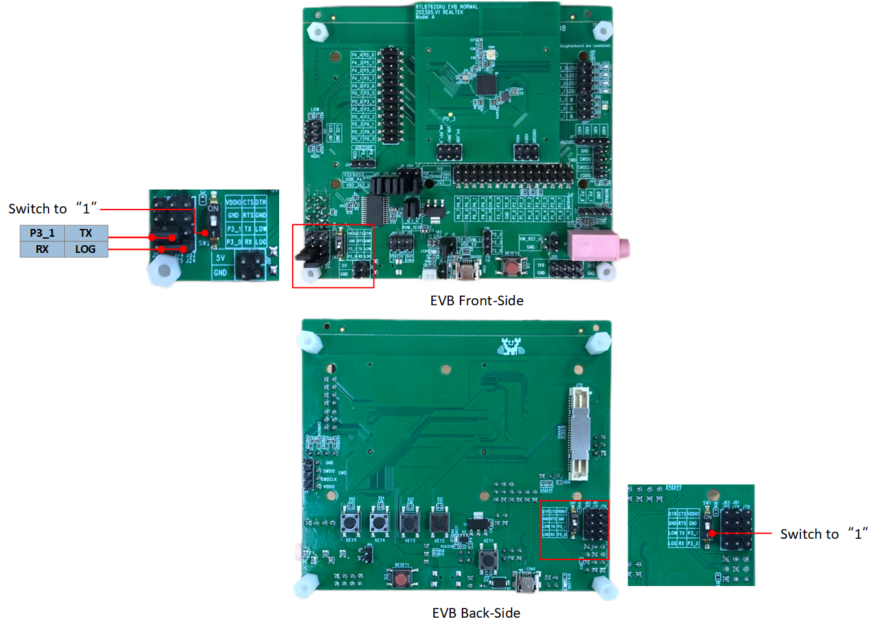
LOG Wiring
Download Mode
Before powering on the EVB, users need to ground the LOG Pin(P0_3) in either of the following ways:
Method 1: There are two dip switches on the front and back sides of the EVB. If either one switches to the 'ON' position, it indicates that the LOG Pin is grounded.

Grounding LOG Pin Method 1
Method 2: There are two dip switches on the front and back sides of the EVB. Both switches to the '1' position, users need to connect the LOG Pin to the GND cable.
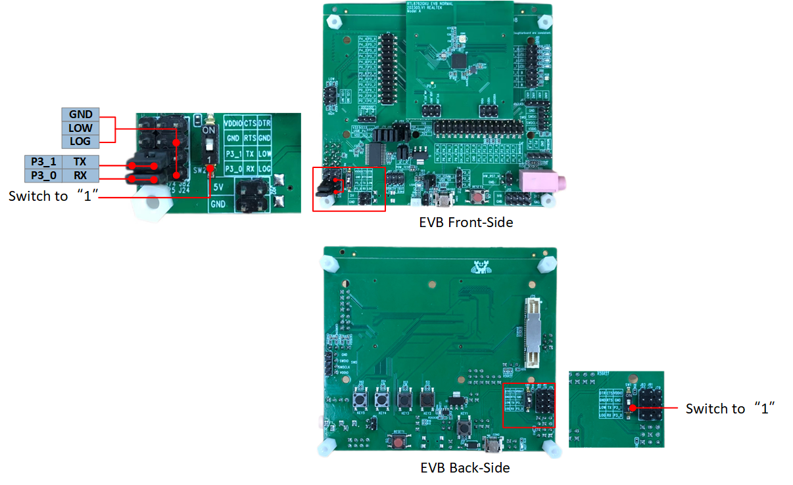
Grounding LOG Pin Method 2
After entering the Download Mode, users can use MP Tool to download the program.
Note
Using Method 1, after the program downloading is completed, the EVB enters Normal Mode by turning both DIP switch to '1' position.
Using Method 2, after the program downloading is completed, the EVB enters Normal Mode by disconnecting the wire between LOG and GND.
Upon power-up, the chip reads the logic level signal from the LOG Pin. If the level is low, it enters Download Mode bypassing Flash. Otherwise, it enters Normal Mode running the application layer program.
Normal Mode
To ensure normal operation of the EVB, make sure to set both sides of the DIP switches to the '1' position and disconnect the LOG and GND connection.

Normal Mode
Compilation and Download
The following is RTL87x2G Default Downloading Files Instructions.
No. |
File |
Instruction |
|---|---|---|
1 |
System Config File |
This file is used to configure various parameters and settings related to the device, such as the Bluetooth address, the number of links, and other relevant configurations. For more information about parameter settings, please refer to the relevant introduction of MP Tool User. |
2 |
Boot Patch Image |
The Boot Patch Image includes the Bank0 Boot Patch Image and the Bank1 Boot Patch Image. The ROM code reserves the Patch function entry point, which can be used to optimize the Boot flow, modify the behavior of the secure ROM code, and expand the functionality of the ROM code. |
3 |
Bank0 OTA Header File |
It is a file that defines the layout of the Flash Bank. |
4 |
Bank0 System Patch Image |
The ROM code reserves the Patch function entry point, which allows modifications to the behavior of the non-secure ROM code and the expansion of ROM code functionality. |
5 |
Bank0 BT Stack Patch Image |
That supports features related to the BT Controller stack. |
6 |
Bank0 BT Host Image |
That implements the BLE Upper stack. |
7 |
Bank0 APP Image |
It is compiled from Keil/GCC project and processed using tools like fromelf. |
8 |
Bank0 APP Config File |
It records app configurations and other information, such as GAP Config settings. For more information about parameter settings, please refer to the relevant introduction of MP Tool User. |
Note
The Boot Patch Image, System Patch Image, BT Host Image, BT Stack Patch Image are provided by Realtek. Users can download the above information through Anchor which is a release system from Realtek, if there is no Anchor account, please apply for registration from the agent/PM/FAE. Alternatively, users can also download these files directly from the RealMCU.
Generating Flash Map
Using MP Tool, click on Flash Map Tool, and the interface will transition to Flash Map Generate Tool. Click on Confirm to generate flash_map.ini. During the synchronization, a flash_map.h file will also be generated.
If do not have any parameters to modify, users can skip this section and directly load the default downloading files from the SDK.
{kind=link}
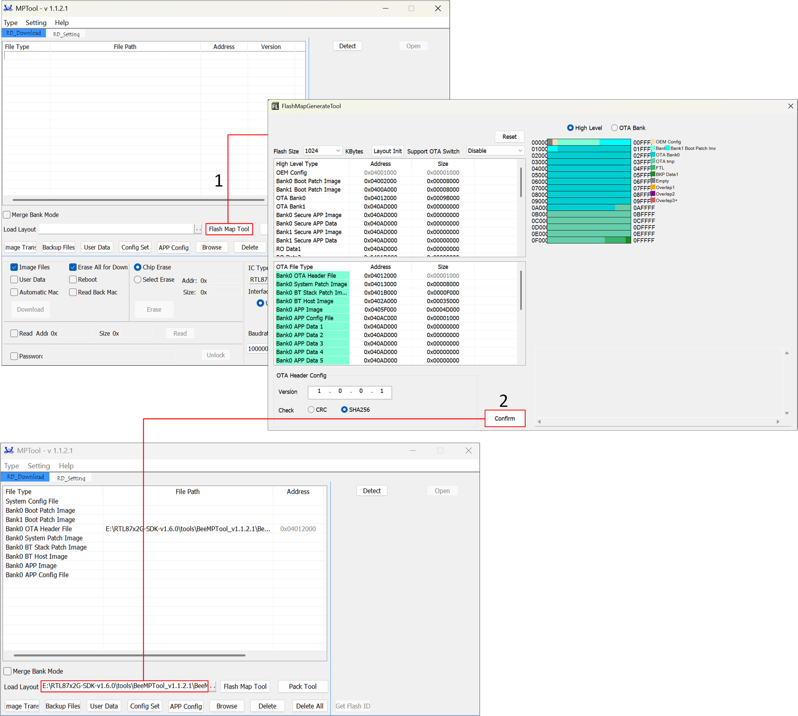
flash_map.ini
Note
Before downloading the files, users need to load the
flash_map.inifile, which represents the allocation of addresses for each file in the flash. Users can generate theflash_map.inifile by clicking on Flash Map Tool on the MP Tool interface.In the Flash Map Generate Tool interface, click on the dropdown option Flash Size to select the appropriate flash size according to the flash actually used in the device.
Users can modify the Flash Layout according to their specific requirements. Click Layout Init and adjust the sizes of each region. After confirming the changes, click Confirm. For more information, please refer to Memory.
Based on the different Flash layout arrangements, there are two types of OTA schemes: Disable Support OTA Switch and Enable Support OTA Switch. Users can click Support OTA Switch to make a selection based on actual situation. The default selection is Disable. For more detailed information, please refer to the OTA document.

Flash Map Generate Tool
Note
If the Flash Layout has been modified, please copy the newly generated
flash_map.hfile to the indicated path to generate the correct load address for Bank0 APP Image. For more detailed information, please refer to Memory.The indicated path is the default SDK flash_map.h path, applicable to most sample projects. If the APP project uses
flash_map.hin a different path, the corresponding file under that path needs to be updated.
{kind=link}
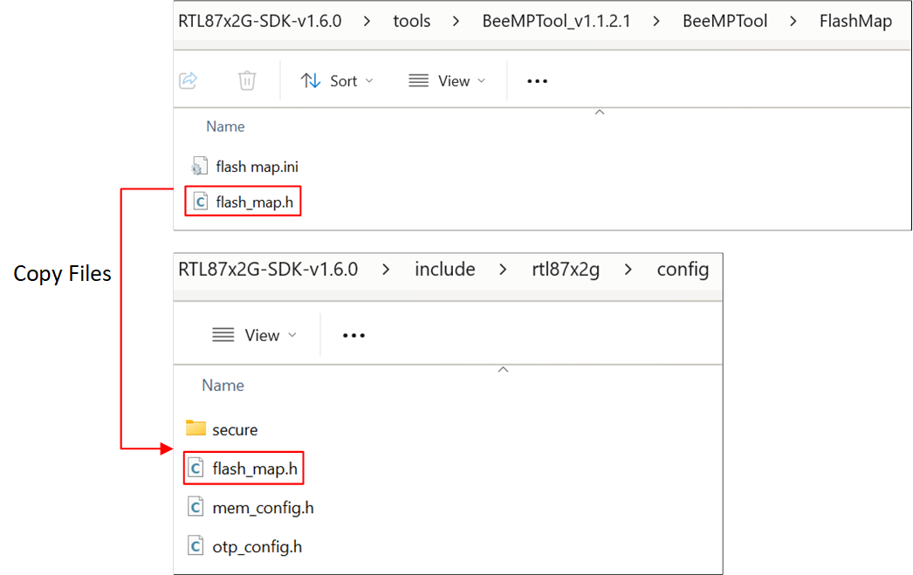
flash_map.h
Generating OTA Header
Using MP Tool, click Flash Map Tool, the interface will navigate to Flash Map Generate Tool, click Confirm to generate flash map.ini file. Synchronously, the OTA Header File will be generated.
If do not have any parameters to modify, users can skip this section and directly load the default downloading files from the SDK.
{kind=link}
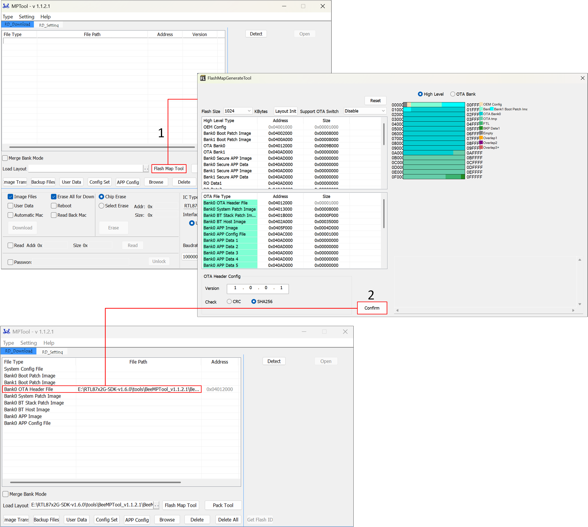
OTA Header File
Note
If the Flash Layout has been modified, the OTA Header File will also be updated accordingly. Please ensure the consistency between flash map.ini file and the OTA Header File.
Generating System Config File
Using MP Tool, click Config Set to open Config Setting interface, adjust the relevant parameters, and then click Confirm to generate the System Config File and load it into the corresponding area.
For first-time developers, it is recommended to keep the default configuration in the Config Setting interface.
For more parameter settings, please refer to MP Tool.
If do not have any parameters to modify, users can skip this section and directly load the downloading files from the SDK.

System Config File
Note
If the Flash Layout has been modified, the System Config File needs to be regenerated.
Generating App Image
All applications in the SDK can be compiled and used through the Keil Microcontroller Development Kit (MDK)/GCC. Before starting software development, it is necessary to first install the Keil or GCC compilation environment. To facilitate the quick establishment of a development project, users can copy or directly open an existing sample project and add functional code based on it.
Keil MDK
Keil MDK is the complete software development environment for a range of Arm Cortex-M based microcontroller devices. MDK includes the µVision IDE and debugger, Arm C/C++ compiler, and essential middleware components.
All applications in the SDK can be compiled and developed using the Keil Microcontroller Development Kit(MDK). Therefore, before starting software development, users need to obtain and install Keil. For more information about Keil, please visit www.keil.com.
The toolchain version information used by Realtek is shown as in the figure. To avoid compatibility issues between ROM executables and applications, it is recommended to use uVision V5.36 or a later version. Configure the default compiler to ARMClang V6.17.
{kind=link}
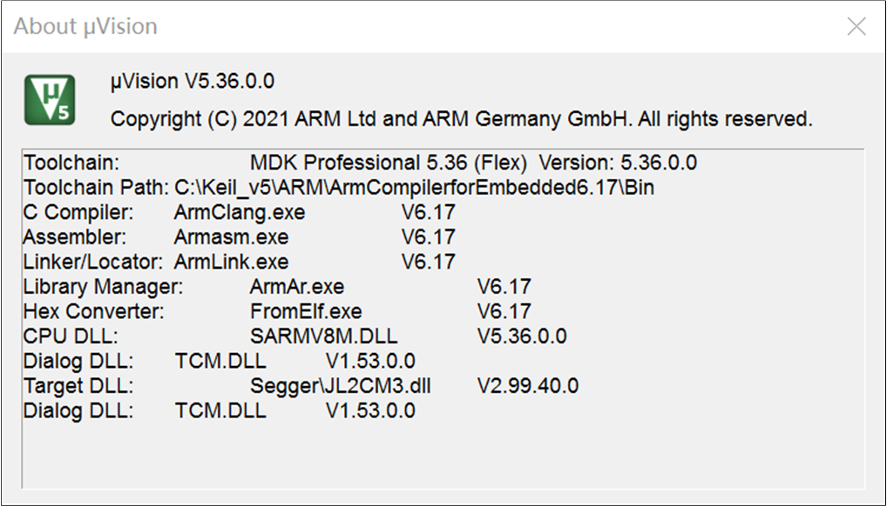
Keil Version Information

Keil Compiler Version Configuration
Taking ble_peripheral project as an example.
After successful compilation, a .bin file with MD5 verification will be generated in the bin folder of the project along with a corresponding .trace file.
The .trace file is used for parsing logs from the SoC.
{kind=link}
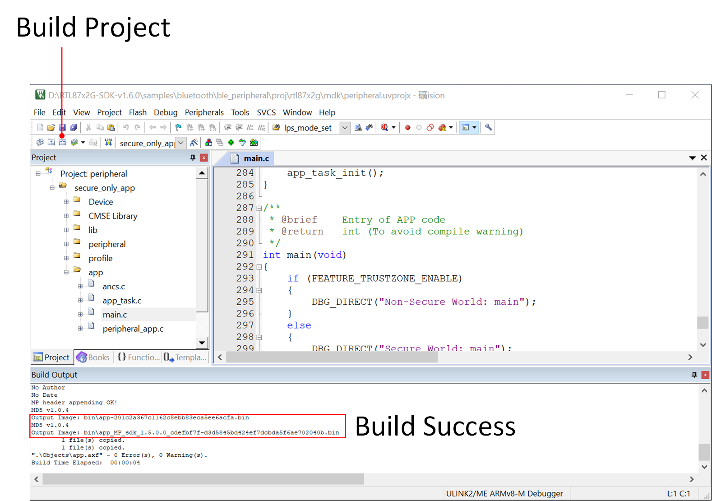
Compile ble_peripheral Project
{kind=link}
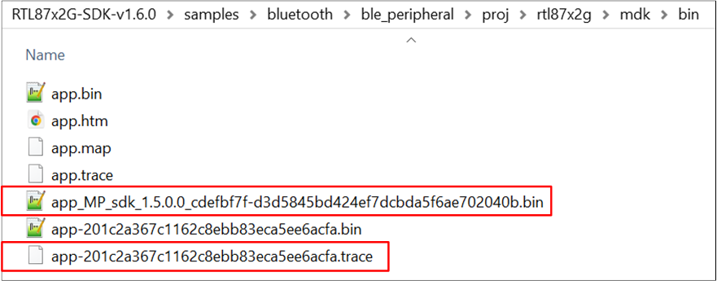
Project Compile Generate Files
Note
MP Tool uses MD5 as the checksum value for the downloading file and requires adding the MD5 value to the suffix of the file name to be downloaded. Therefore, the download file is an APP Image with the prefix 'MP'.
In a Keil project, the generation of the disassembly file app.disasm is disabled by default.
If users need to enable this feature for debugging purposes, you can modify the after_build_script.bat file.
//remove the comment symbol "::"
::%keil_compiler_include_floder%\..\bin\fromelf.exe -acd --interleave=source -o "bin\%linker_output_file_name%.disasm" "%full_name_path%"
Note
The --interleave=source flag interleaves the source code with the disassembly output, making it easier to correlate source code with the disassembled code. However, note that the file will contain the user's source code, so please ensure its confidentiality.
GCC
To compile a GCC project, it is necessary to properly configure the environment variables for the GNU Toolchain and MinGW Toolchain. Using the D drive as the installation root path, add the following paths to the environment variables.
D:\GCC\MinGW\bin;
D:\GCC\MinGW\include;
D:\GCC\MinGW\lib;
D:\GCC\gcc-arm-none-eabi-10-2020-q4-major-win32\gcc-arm-none-eabi-10-2020-q4-major\bin;
Taking ble_peripheral as an example, run the cmd command in this directory and enter the command mingw32-make.
After successful compilation, a .bin file with MD5 verification will be generated in the bin folder of the project.
{kind=link}
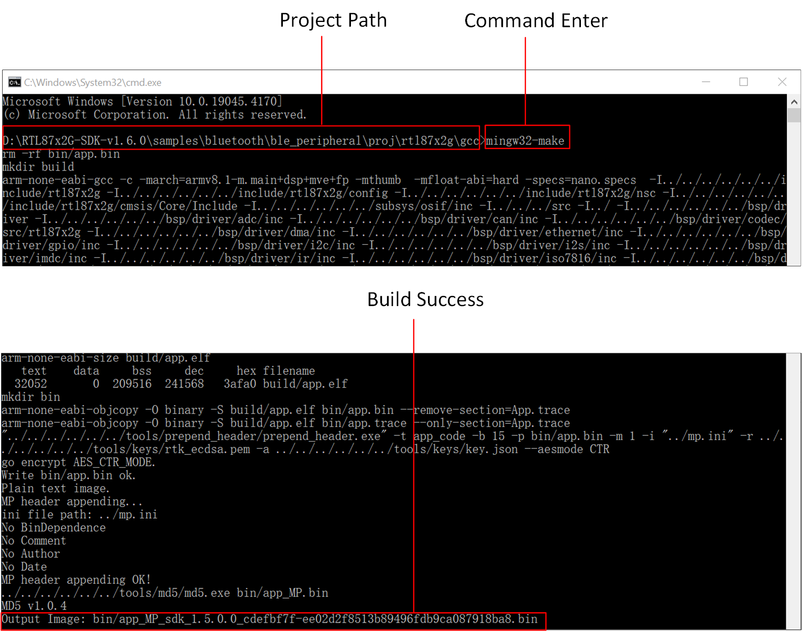
GCC Project Compilation
{kind=link}
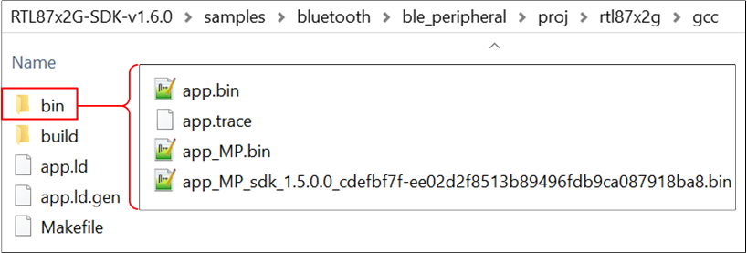
GCC APP Image Path
In a GCC project, the generation of the disassembly file app.dis is disabled by default.
If users need to enable this feature for debugging purposes, you can modify the Makefile file.
# remove the comment symbol "#"
#$(OD) -D -S build/$(TARGET).elf > bin/$(TARGET).dis
Note
The -S flag interleaves the source code with the disassembly output, making it easier to correlate source code with the disassembled code. However, note that the file will contain the user's source code, so please ensure its confidentiality.
Images Download
MP Tool Download
Set the EVB to Download Mode and use MP Tool to download the files onto the device, the tool version must be at least V1.1.0.x.
Double-click to run
MPTool.exe.
MPTool.exe
[IC Type]: RTL8762G_VB.
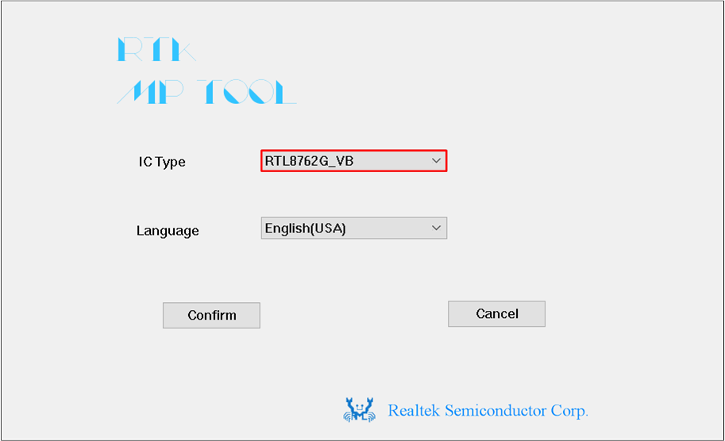
MP Tool IC Type Selection
[Type]: Debug.
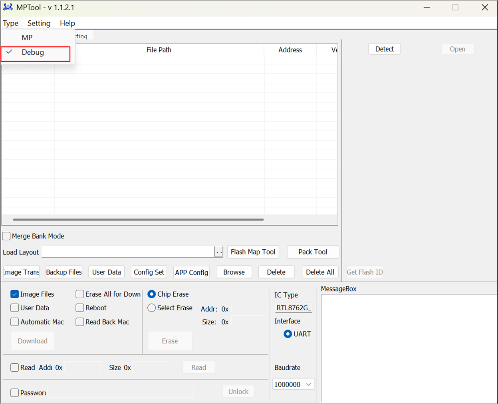
MP Tool Mode Selection
Click on .. button in the Load Layout of the MP Tool downloading interface to load the
flash_map.inifile.Click Browse, loading all files. The following table lists the file types and loading paths.
Bank0 APP Image: It is recommended to load APP Image from the default files.
After powering on the device, it can be verified through the Mobile App to help test whether the firmware on the device is running correctly.
RTL87x2G Downloading Files & Paths File Type
File Name
File Path
System Config File
configFile_xxx.binRTL87x2G-SDK-Vx.x.x\\bin\\rtl87x2g\\default_bin\\disable_bank_switch\\trustzone_disable\\commonBank0 Boot Patch Image
BANK0_boot_patch_MP_release_xxx.binRTL87x2G-SDK-Vx.x.x\\bin\\rtl87x2g\\default_bin\\disable_bank_switch\\trustzone_disable\\commonBank1 Boot Patch Image
BANK1_boot_patch_MP_release_xxx.binRTL87x2G-SDK-Vx.x.x\\bin\\rtl87x2g\\default_bin\\disable_bank_switch\\trustzone_disable\\commonBank0 OTA Header File
OTAHeader_Bank0_xxx.binRTL87x2G-SDK-Vx.x.x\\bin\\rtl87x2g\\default_bin\\disable_bank_switch\\trustzone_disable\\common\\bank0Bank0 System Patch Image
sys_patch_MP_release_xxx.binRTL87x2G-SDK-Vx.x.x\\bin\\rtl87x2g\\default_bin\\disable_bank_switch\\trustzone_disable\\common\\bank0Bank0 BT Stack Patch Image
bt_stack_patch_MP_master_xxx.binRTL87x2G-SDK-Vx.x.x\\bin\\rtl87x2g\\default_bin\\disable_bank_switch\\trustzone_disable\\common\\bank0Bank0 BT Host Image
bt_host_MP_xxx.binRTL87x2G-SDK-Vx.x.x\\bin\\rtl87x2g\\default_bin\\disable_bank_switch\\trustzone_disable\\common\\bank0Bank0 APP Image
app_MP_sdk_xxx.binRTL87x2G-SDK-Vx.x.x\\bin\\rtl87x2g\\default_bin\\disable_bank_switch\\trustzone_disable\\common\\bank0\\ble_peripheralBank0 APP Config File
appConfigFile_xxx.binRTL87x2G-SDK-Vx.x.x\\bin\\rtl87x2g\\default_bin\\disable_bank_switch\\trustzone_disable\\common\\bank0Click Detect, the interface will display the detected COM port of the device.
- Click Open, if the COM port can be opened successfully, the progress bar on the right side will display OK, otherwise, it will display Fail.If Fail, user can refer to common errors and troubleshoot them one by one. After checking that everything is correct, user can repeat the steps, click on again.
Common errors are as follows
Check whether the Tx/Rx pins of the serial port are connected incorrectly.
Check that the LOG Pin (P0_3) of the device is grounded before powering on.
Check whether the serial port converter board supports 1M baud rate.
Check whether the COM port is occupied.
After the serial port is successfully opened, Click Download, the progress bar on the right of the COM port displays the current program download progress.
After the download is completed, it will display OK.
If Fail is displayed, please press the Reset button on the EVB or power cycle the EVB, and then repeat the above steps.
Note
MP Tool supports two downloading modes:
MP Mode: Used for production line manufacturing.
Debug Mode: Used by developers for debugging and development purposes.
MP Tool can download single or multiple files. If user wants to download only a single file, such as the Bank0 APP Image, do not click Erase All for Download option in the MP Tool interface.
{kind=link}
{kind=link}
J-Link Download
J-Link is a debugger/simulator developed by SEGGER. It is a specialized tool for Arm processors and is used for the development, debugging, and testing of firmware on embedded devices. It offers high-speed and reliable simulation performance, supporting real-time debugging and fast firmware downloading. J-Link can help developers accelerate the debugging and validation process of embedded systems, improving efficiency and quality in development.
J-Link supports various connection interfaces such as JTAG, SWD, etc. Due to SWD requiring fewer connections, the RTL87x2G utilizes this interface. Additionally, J-Link is compatible with multiple development environments and IDEs such as Keil MDK, IAR Embedded Workbench, etc. Please set up the Keil environment correctly.
J-Link Software v6.44 (or later) is recommended, for more information, please refer to Debug With SWD.
After completing the SWD connection, users can use J-Link to download the app image. Please ensure that the other files have been downloaded using MP Tool. Before downloading with J-Link, copy the Flash algorithm from the SDK directory to the specified path in the KEIL installation directory. After copying, accurately set the related parameters according to the interface shown below.

Copy File Path

KEIL Setting-1

KEIL Setting-2
{kind=link}
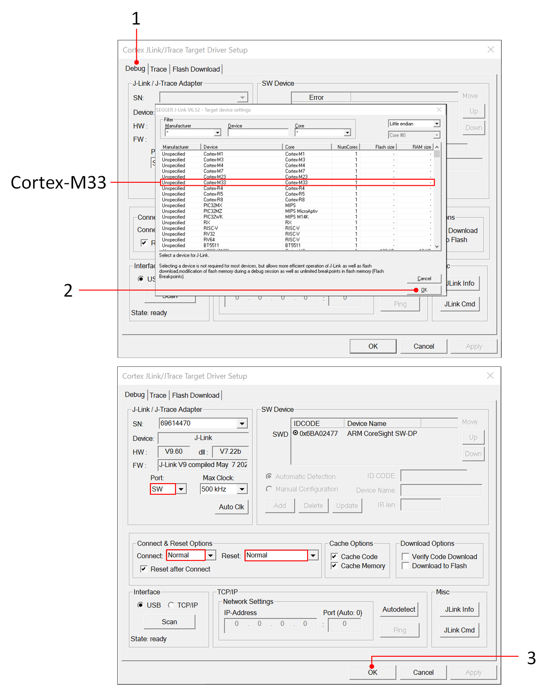
KEIL Setting-3
{kind=link}
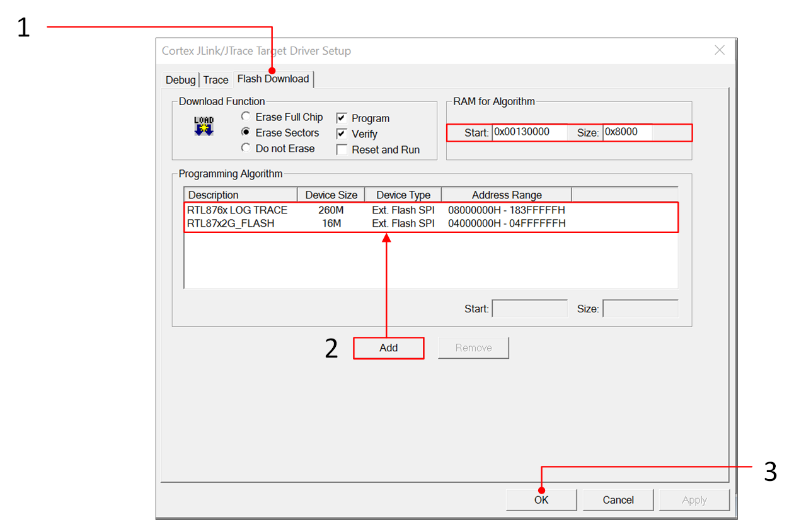
KEIL Setting-4
Note
System debugging with J-Link will be ineffective in DLPS mode. It is recommended that users disable DLPS mode when using J-Link for debugging. For more information, please refer to Low Power Mode.
To use the J-Link debugger, users need to ensure that the SWDIO(P1_0) and SWDCLK(P1_1) pins are not repurposed in the program.
Example Verification
Mobile App Verification
Taking the ble_peripheral project as an example, ensure that the EVB interface wiring is correct and set the EVB into Download Mode. Load the default files from the SDK and complete the downloading process, and then set the EVB into Normal Mode.
Users can use a Bluetooth APP on a smartphone to search for BLE advertisements, the default advertisement name is BLE_PERIPHERAL. Click on Connect and once the smartphone is successfully connected to the device, it will display the Services of the remote device on the phone.
{kind=link}
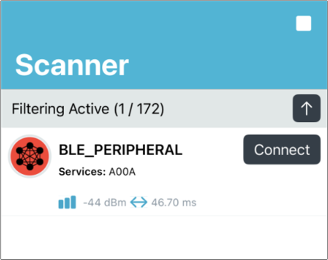
BLE Advertising

Connection Success
Log Verification
Users can use Debug Analyzer to capture the SoC Log to check whether the program is running correctly. Please complete the LOG Wiring correctly.

DebugAnalyzer.exe
Double-click to run DebugAnalyzer.exe, click Setting, Baud rate is set to 2M by default, and load the corresponding .trace file in the App Trace File.
Click Confirm to confirm the Settings.
{kind=link}
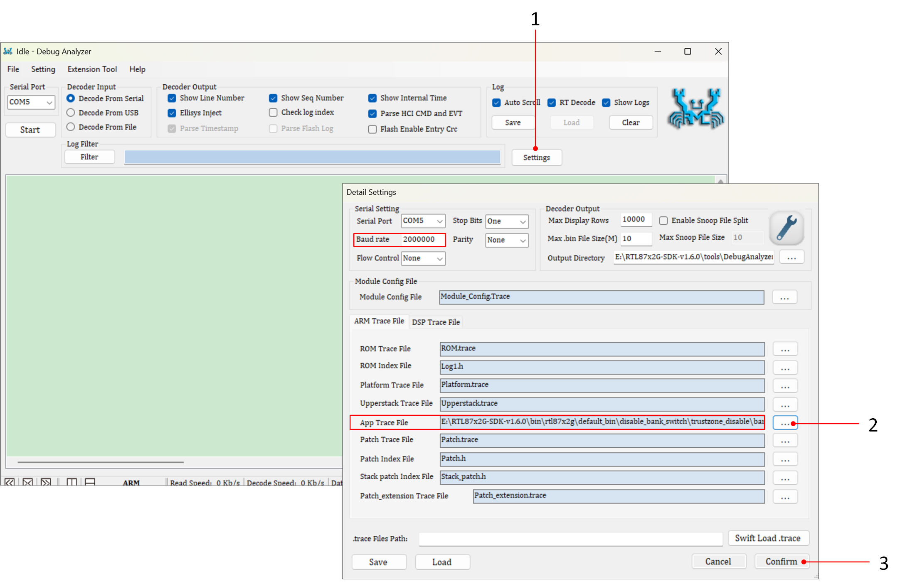
Debug Analyzer Parameter Setting
Select the correct Serial Port, click on Start, and Debug Analyzer will start working.
It will save the captured Raw Data in a .bin file, and based on the users' settings of the .trace file, it will parse the raw data into plain text logs and save them in a .log file.
Taking the ble_peripheral project as an example. After powering on the EVB board, if see a Log message of GAP adv start, it means that the device has started advertising. Clicking on Connect in the Bluetooth app interface on the phone, if the user see a Log message of GAP adv stoped:because connection created, it means that the phone has successfully connected to the device.
{kind=link}
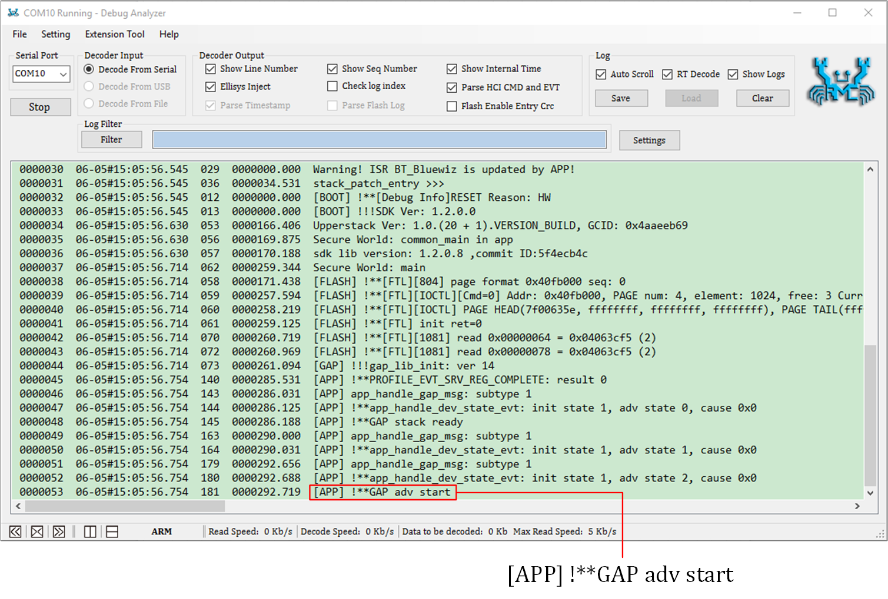
ADV Start
{kind=link}
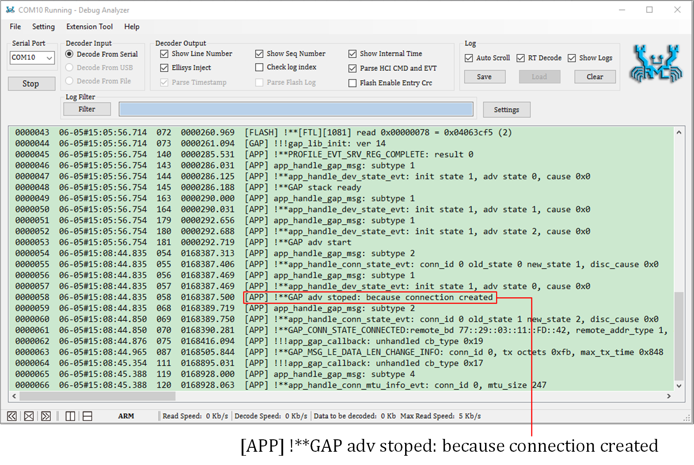
Connection Create

Log Data File
Note
Default save path: the DataFile folder in the same directory as
DebugAnalyzer.exe.The
.tracefile is used to parse the binary log stream received via the serial port. A new.tracefile is generated each time the project is compiled. It is important to ensure that the.tracefile matches the code currently running on the SoC.If users encounter any issues during the development process, please provide the
.log.bin.cfafiles under the DataFile folder, as well as the corresponding.tracefile. This will help Realtek analyze and locate the issue more effectively.